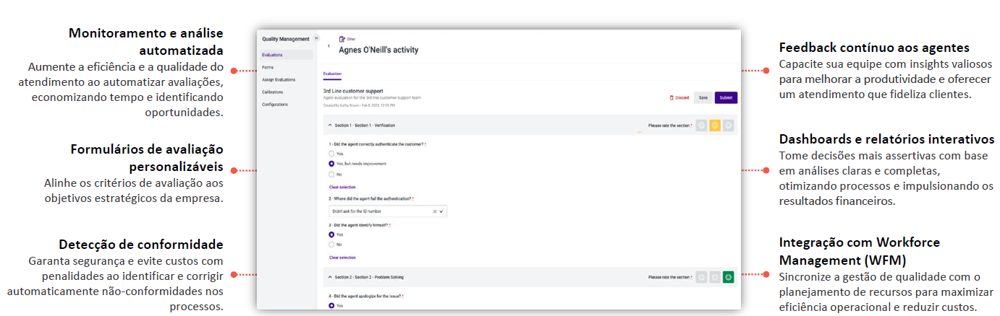

O Quality Management (QM) é uma poderosa ferramenta de monitoramento, acompanhamento e controle para melhorar tanto o atendimento ao cliente, bem como a produtividade dos operadores e a qualidade da informação que chega aos gestores.
IA e NLP para revisar chamadas, e-mails e chats com base em critérios.
Critérios personalizáveis para garantir alinhamento estratégico.
Identifica violações regulatórias como GDPR e PCI DSS.
Fornece insights aos agentes com base nas avaliações.
Análises detalhadas para líderes tomarem decisões.
Sincroniza qualidade com gestão de escalas e treinamentos.
O diferencial do Talkdesk QM em comparação aos demais no mercado está em sua integração nativa com o Talkdesk CX Cloud, oferecendo uma visão holística e em tempo real das interações dos agentes.
Sua inteligência artificial no QM Assist facilita a análise automática e oferece recomendações personalizadas.
Permite avaliações mais rápidas e precisas, com fluxos simplificados e uma interface intuitiva, tornando a gestão de qualidade mais eficiente e acessível.
Definir critérios claros para avaliação de desempenho dos agentes.
Treinar supervisores e agentes sobre como usar o QM para melhorias.
Criar formulários alinhados às necessidades da operação.
Garantir integração com CRM e outras ferramentas para visão 360°.
Estabelecer processo constante de orientação e desenvolvimento.
Revisar e otimizar as métricas e formulários conforme a evolução.
Automatizar avaliações e garantir melhorias com NLP e machine learning.